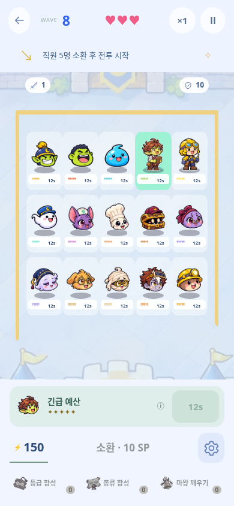
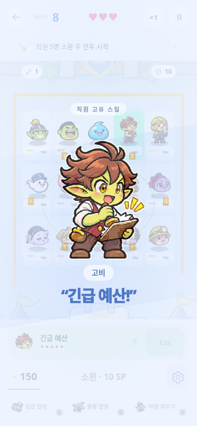
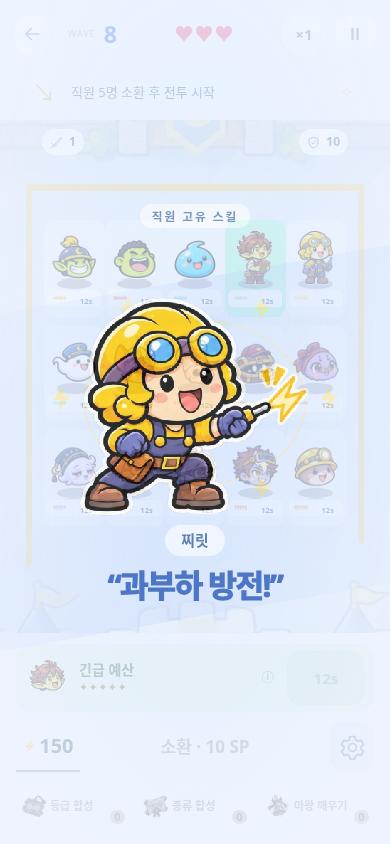

메뉴 얼굴과 같은 인게임 전신
고비·찌릿의 현재 얼굴을 기준으로 전신과 6개 모션을 맞췄습니다.
고비
지금 메뉴 얼굴
예전 전투 모습
새 전투 외형
찌릿
지금 메뉴 얼굴
예전 전투 모습
새 전투 외형
고비 · 6개 동작
idle
blink
anticipation
attack
skill
recovery
찌릿 · 6개 동작
idle
blink
anticipation
attack
skill
recovery
실제 전투·컷인 캡처


